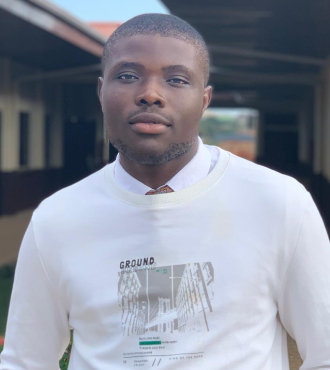
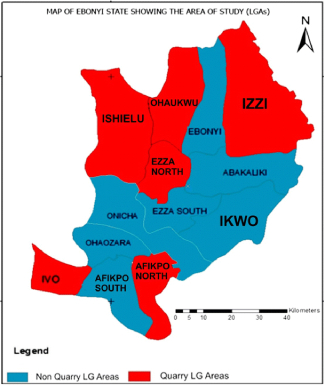

About Me
My name is Zion Onyedikachi Obia, I am a student of Brigham Young University-Idaho served by pathway. I major in Web development and computer programming, and this landing page is one of the many projects i am working on this semester. Currently i reside in Abeokuta, a city in Ogun state Nigeria. However i am from Okposi Ebonyi state Nigeria, i am igbo which is one of the dominant tribes in Nigeria.
Ebonyi, Nigeria
Ebonyi is a state in southeastern Nigeria. It is inhabited and populated primarily by the Igbo. Its capital and largest city is Abakaliki. Other major townships include Okposi, Afikpo, Onueke, Edda, Onicha, etc. It was one of the six states created in 1996 by the Abacha government. Ebonyi is primarily an agricultural region. It is a leading producer of rice, yam, potatoes, maize, beans, and cassava in Nigeria.